拾花一叶 · 校园来信 V5
从一封来信，到一片被珍藏的祝福。
本页汇集实际 Edge 网页截图、未经剪辑的操作录屏和关键动画帧。画面来自可运行页面，触摸操作使用浏览器模拟。
16 / 16V5 两分辨率测试通过
12 轮完整会话复位检查
45.84 秒完整原始操作录屏
构建通过TypeScript + Vite
一段完整的真实运行过程
含首次风效、揭封、沉底、抽出活动信封、聚焦与筛选、详情往返、明信片翻面、收藏入套、复位。原始录屏保留全部等待和转场，25 fps。
首次进入与三次风效
开封、沉底、逐张抽信
五页与关键操作状态
点击图片查看原始 PNG。切换尺寸只替换实际采集的截图。
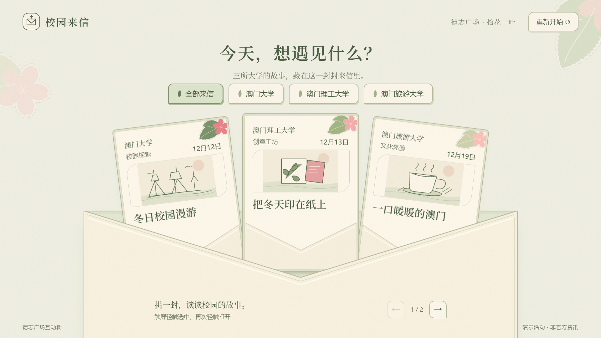
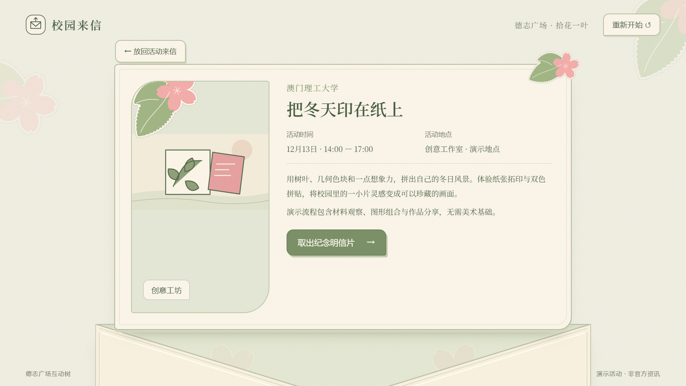
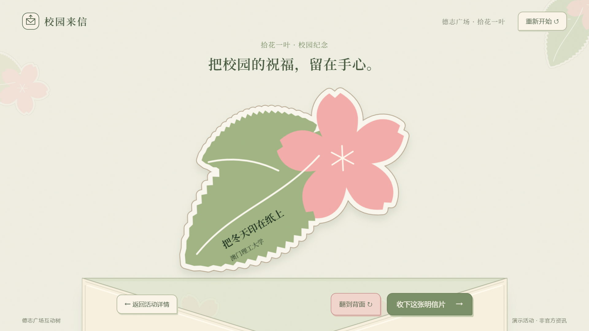
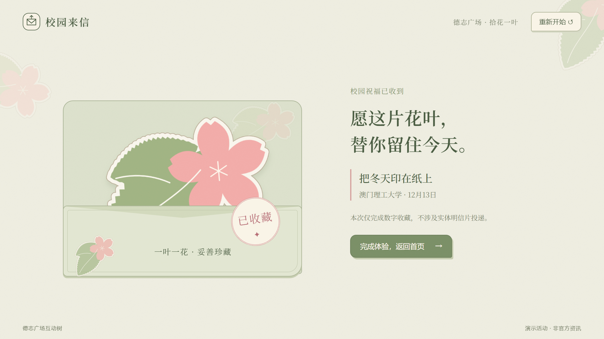
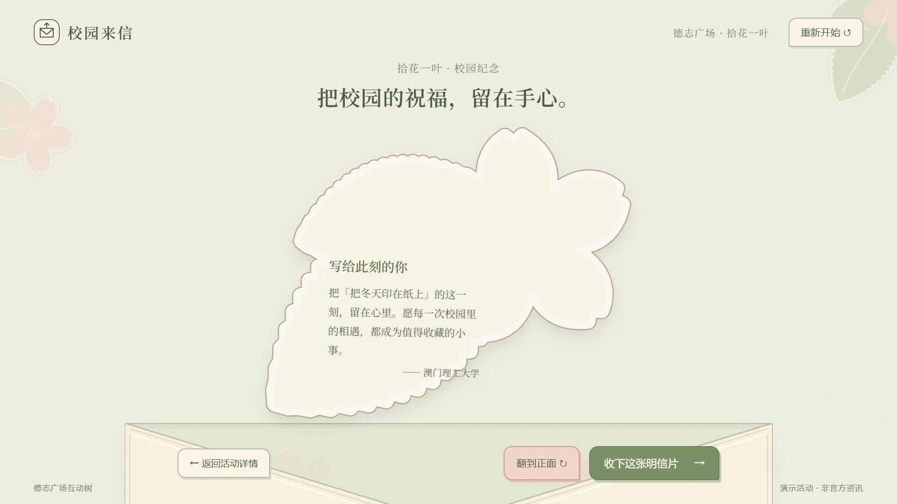
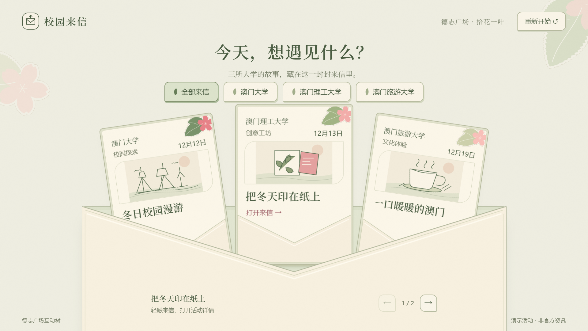
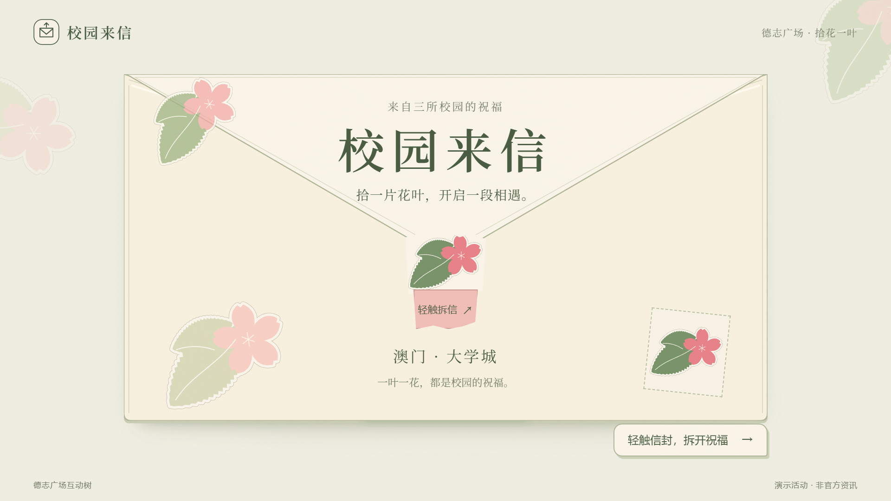
从动作中间看空间是否成立
0%、25%、50%、75%、100% 以及结束后稳定状态。截图通过浏览器时钟推进真实动画获得，不是另画的示意图。
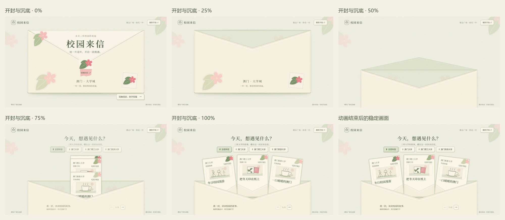
0% · 25% · 50% · 75% · 100% · 稳定状态 · 同一信封的几何记录
选中活动与信纸展开
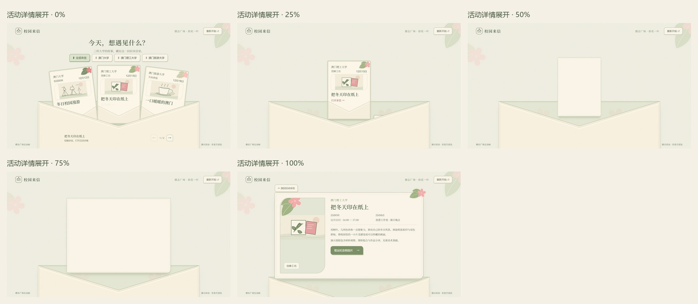
明信片从信纸后方抽出
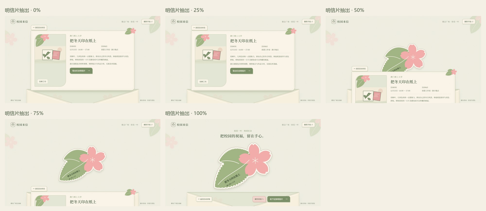
正反面翻转与标题安全空间
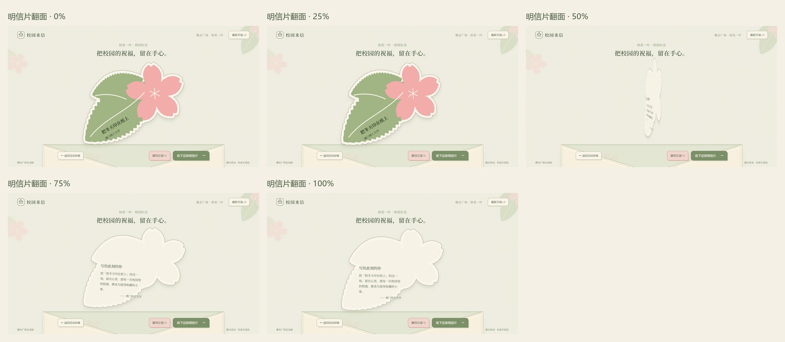
确认、入套、盖章
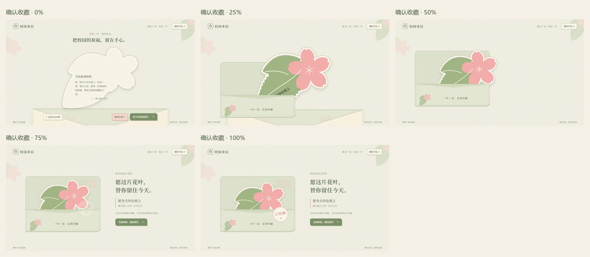
V4 与 V5，实际页面并排看
同一台浏览器、1920×1080、同一活动。左侧 V4，右侧 V5。
一套花叶纸品的来源
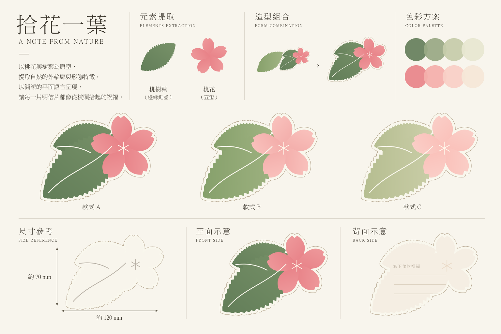


测试与仍需现场验证的部分
真实公共触屏、现场观看距离/亮度、Safari/Firefox 与竖屏手机尚未验收。活动内容和活动插画仍为演示，收藏仅在当前数字会话中反馈。自动化通过不代表最终审美验收。
具体修复根因、Skills 的实际使用、素材替换入口与全部限制均记录在 V5 交付记录。